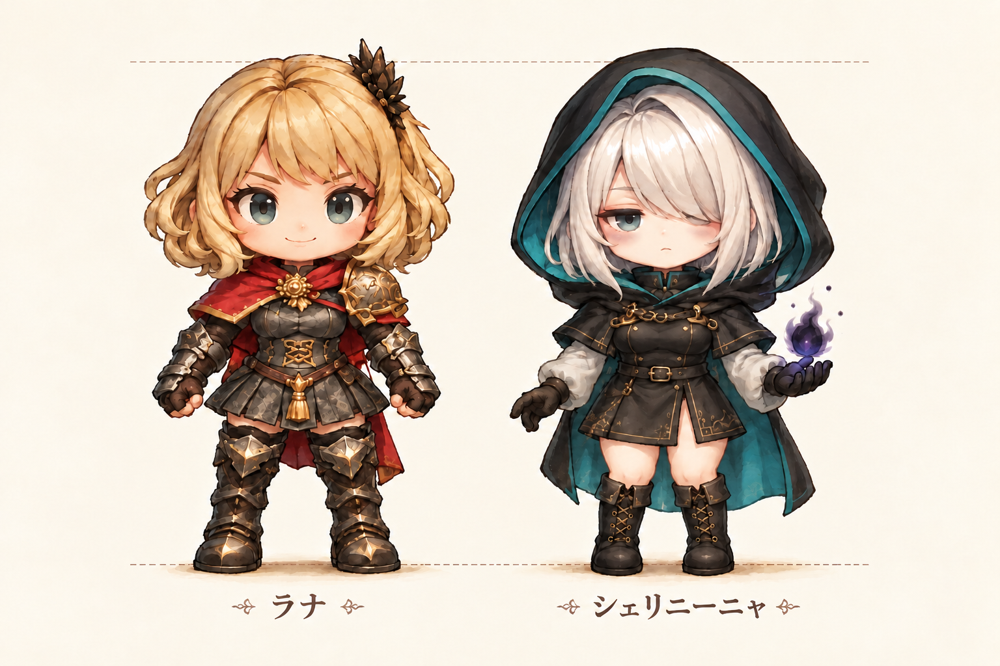

助っ人 03 · 待機・歩行・詠唱
薄朱色の目元、淡いクマ。眠たげな黒魔法使い。
本編で採用済みのラナの画像と比較。共通の縮尺と足元で表示します。
画像を読み込み中…
眠そうな表情とフード、気だるい待機・歩行・詠唱。左右反転は使っていません。
8方向の直線2マスへ黒い魔法。敵を貫通して攻撃し、味方にはダメージを与えません。壁では止まります。
本編に実装済み。主人公が射線の途中にいても、その先の敵だけに当たります。
